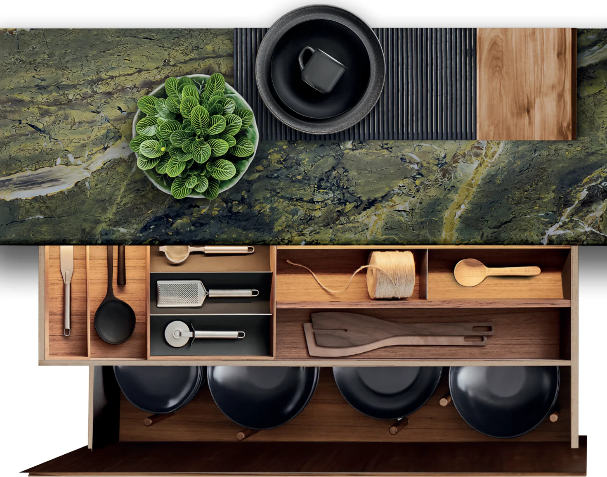

London · Bespoke kitchen
Hampstead
House.
Project 01 / A quieter way of living
Warm timber.
Clear intention.
A considered kitchen design study for a period home in Hampstead, balancing rich timber, natural stone and the rhythm of everyday family life.
Nura developed the spatial direction, material palette and joinery language for the proposal.
Material palette
Walnut, stone
and soft light.
Start your project
Make room for
what matters.
Tell us about your home and we’ll start a conversation.
Enquire with Nura ↗